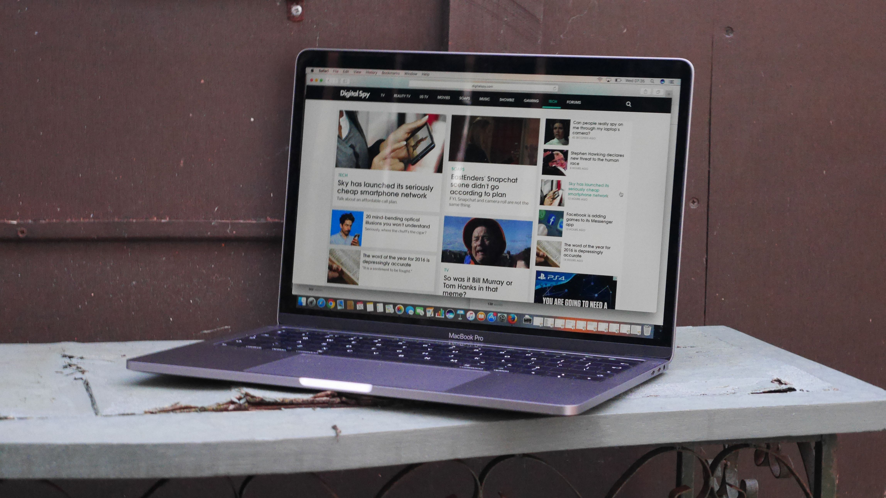

Introduction
Welcome to our website, where we compare and contrast Mac and Windows laptops. When it comes to choosing a laptop, the decision can be tough. Both Mac and Windows laptops have their strengths and weaknesses, and it ultimately comes down to personal preference and usage requirements. In this website, we will discuss the features, specifications, and prices of each type of laptop, so you can make an informed decision.
Mac Laptops
Mac laptops are known for their sleek design, user-friendly interface, and exceptional build quality. They run on the macOS operating system, which is widely regarded as one of the most stable and secure operating systems available. Mac laptops are popular among creative professionals, such as graphic designers, photographers, and video editors, due to their powerful hardware and software. However, they tend to be more expensive than Windows laptops and may not be as compatible with certain software or hardware.
Top 3 Mac Laptops
- Macbook Pro
- Macbook Air M2
- Macbook air

Windows Laptops
Windows laptops are known for their affordability, wide range of options, and compatibility with various software and hardware. They run on the Windows operating system, which is the most popular operating system globally. Windows laptops come in different shapes, sizes, and configurations, allowing users to choose a laptop that fits their needs and budget. While they may not have the same level of build quality as Mac laptops, they offer excellent value for money and can be an ideal choice for everyday users.
Top 3 Mac Windows
- Microsoft Surface Pro
- HP Stream
- Lenovo IdeaPad